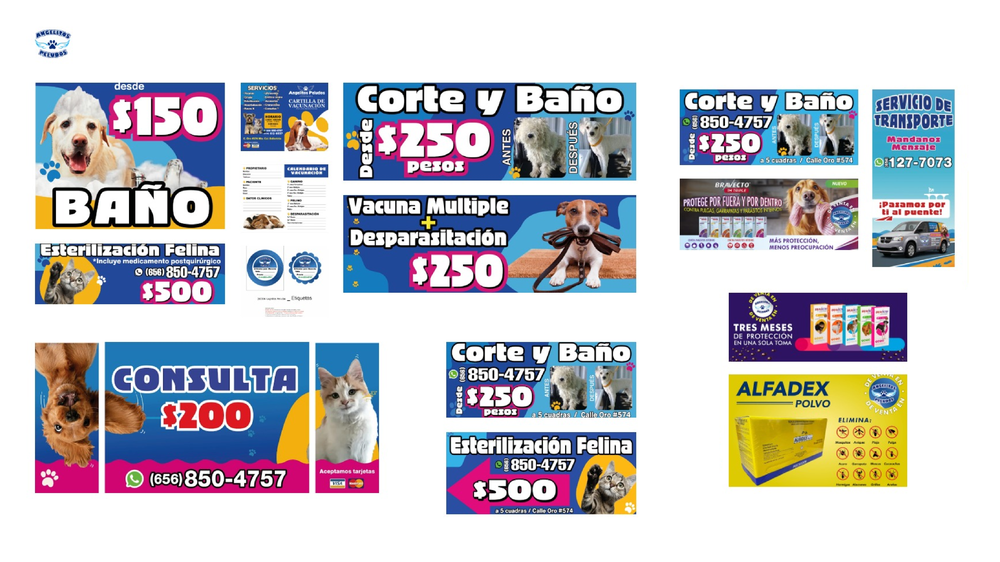

Angelitos Peludos es una veterinaria y grooming muy bien ubicada en Ciudad Juárez, y uno de los clientes con los que más constantemente trabajo. Creé su identidad desde el inicio y, desde entonces, desarrollo sus impresos, banners y diseños para redes sociales, cuidando que la marca se mantenga cálida y reconocible en cada pieza. Es una marca a la que le tengo mucho cariño.